Gylling
Feinkörniger, hellgrauer Granit
Höhe: 137 cm
Größte Breite: 56 cm
Dicke: 35 cm
Runenhöhe: 14,5 - 20 cm
Runeninschrift :
Toki, Sohn des Thorgisl, errichtete diesen Stein zum Andenken an ... guten und ... seinen Bruder.

75 - Gylling - Letztes Update 30.09.2025
Listennummer : DR 53 / DK MJy 70
Navidaten: 55.89054 10.16557 oder: Lerdrupvej 2, 8300 Odder
Transliteration:
Seite A: tuki : þurkisl : sun : raisi : stain :
Seite B: þansi : aft : ---...
Seite C: kuþan : auk : | risbiik : sin : buruþur :
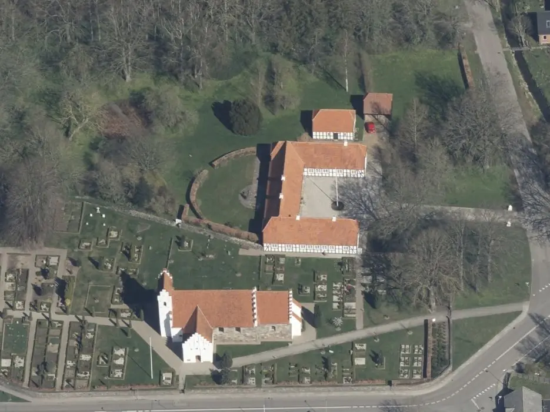
Dies ist ein Luftfoto vom 18.04.2023 von Skråfoto, das die Kirche von Gylling zeigt. Skråfoto ist eine Webanwendung, die von Klimadatastyrelsen weltweit kostenlos bereitgestellt wird - Freie Nutzung unter Beachtung der Lizenz: CC BY 4.0. Die Aufnahmen werden alle zwei Jahre erneuert und neben einer Senkrechtaufnahme wird ein Schrägbild aus jeder Himmelsrichtung angeboten, das man über eine Adresssuche aufrufen kann.
Erstmals war ich am Samstag, 10.08.1991, vor Ort. Die (qualitativ schlechten) Fotos im linken Frame zeugen von diesem frühen Besuch. Nun habe ich es mir im Rahmen meiner 2022er Jütland Wikingertour am Sonntag, 05.06.2022, erneut einrichten können. Nach über einem Jahr schaffe ich es nun auch endlich die Fotos einstellen zu können - wie die Zeit vergeht!
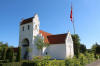 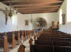 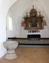 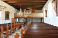 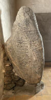 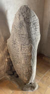 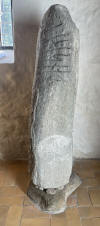 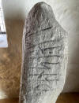 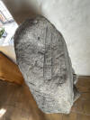 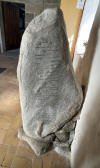


Die obigen Fotos vom Runenstein sind mit dem iPhone 12 Pro entstanden, während die unten mit der Canon EOS 70D aufgenommen wurden.
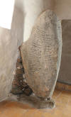 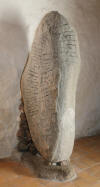 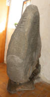 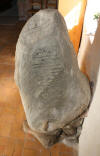 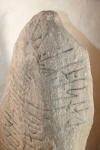 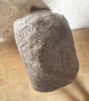 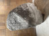


Der erste schriftliche Beleg zu dem Runenstein stammt vom 10. August 1839 vom Kaplan Kaplan Jacob Michael Budtz aus Gylling (*20.08.1805 - 04.05.1871 - link-LIVES) und war an das Nationalmuseum in Kopenhagen adressiert. Der Text lautet: "For nogen Tid siden fortalte Sognefoged Søren Sørensen i Gylling mig, at der under hans Lade fand tes indsat en Steen, hvorpaa Noget var indhugget. Jeg gjorde da den Aftale med Manden, at vi ville lade Stenen tage ud paa det Sted, den laae, for nærmere at undersøge den. Dette er da iværksat, og har jeg funden Stenen at være en, som det synes mig, ikke umærkelig Runesten. Paa Stenens tvende Sider findes Skrift indhuggen, hvilken tydeligen skjønnes at være Runer. Dog er paa den ene af disse Sider Runerne lidet udslidte, formodentlig fordi Stenen engang har været lagt paa et Sted, hvor der har været Gang over den....... Hvorfra den var taget, har jeg ingen paalidlig Oplysning kunnet erholde om. Dog meente Sognefogden, at den var taget fra en nu forstyrret Høi paa hans eller maaske hans Naboes Mark."
Übersetzung: "Vor einiger Zeit erzählte mir der Gemeindevogt Søren Sørensen in Gylling, dass unter seiner Scheune ein Stein eingesetzt sei, in den etwas eingemeißelt sei. Ich traf daraufhin mit dem Mann die Vereinbarung, dass wir den Stein an dem Ort, an dem er lag, herausnehmen wollten, um ihn näher zu untersuchen. Dies wurde dann auch durchgeführt, und ich habe den Stein als einen wie es mir scheint nicht unbedeutenden Runenstein befunden. Auf zwei Seiten des Steins befindet sich eingemeißelte Schrift, die eindeutig als Runen zu erkennen ist. Doch auf einer dieser Seiten sind die Runen etwas abgenutzt, vermutlich weil der Stein einmal an einem Ort lag, über den man hinwegging ... Zur Frage woher er ursprünglich stammte, konnte ich keine verlässliche Auskunft erhalten. Der Gemeindevogt meinte jedoch, dass er von einem nun zerstörten Grabhügel auf seinem oder vielleicht dem Feld seines Nachbarn stamme."
Budtz war ab 27.06.1837 in Gylling als Hilfe des örtlichen Pfarres - als Kappelan - tätig. Er war danach ab dem 08.03.1841 bis zu seinem Tod 1871 Pfarrer in Mårslet. Sein Grabstein befindet sich noch heute auf der Ostseite des dortigen Friedhofs, etwas nördlich des Friedhofseingangs, in 2000 renoviert).
Laut Kaplan Kaplan Jacob Michael Budtz hatte ihm also der Gemeindevorsteher und Landwirt Sören Sörensen (*1790 - 1863 - link-LIVES - Grabstein ► Sören Sörensen in der dortigen Suchmaske eingeben) aus Leerdrup bei Gylling (ca. 1,6 km östlich gelegen) geraume Zeit zuvor von einem Stein erzählt, der vor der Eingangstür von dessen Kuhstall verbaut war. Der Runenstein lag zunächst bis 1850 beim Misthaufen des Bauernhofes.
Das nächste Dokument, das sich im Archiv des Nationalmuseum in Kopenhagen bewahrt hat, ist ein Brief vom 21.04.1852 von Lars Otto Møller (*20.02.1831 - 13.01.1915, Sohn des zu der Zeit amtierenden Pfarrers Hans Larsen Møller, der in Gylling von 1841-1870 im Amt war - ab 10.01.1860 Kaplan (Hilfspfarrer) bei seinem Vater, nach dessen Tod selbst Pfarrer in Gylling von 1870-1914 - link-LIVES),
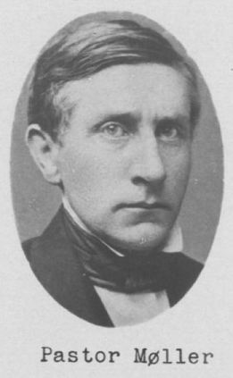
Lars Otto Møller - Bildquelle: Trøst-Hansens sognekort - Nr. 3064 - Lizenz: Public Domain
in dem er berichtet, dass der Stein 1851 zur Kirche verbracht wurde. Auf dem Briefumschlag steht: "Gave til det Offentlige af en Runesten, funden ved Gylling nær Horsens, Hads Herred, Århus Amt. I 1851 blev Stenen, som tidligere henlaae ved Bondegaardens Mødding, flyttet til Gylling Kirke - Übersetzung: "Geschenk eines Runensteins an die Öffentlichkeit, gefunden in Gylling bei Horsens, Hads Harde, Kreis Århus. Im Jahr 1851 wurde der Stein, der zuvor beim Misthaufen des Bauernhofes lag, zur Gylling-Kirche verlegt (Quelle: Erik Moltke - Nytolkning af Gylling-stenen - Aarhus Aarbog, 1930, S. 161-173).
Bei der Kirche stand er draußen unter dem Westturm und war Wind und Wetter ausgesetzt. Erst 1890 wurde er auf Vorschlag von Prof. Julius Magnus Petersen (*04.09.1827 - 31.01.1917, Archäologischer Zeichner und Restaurator - link-LIVES - Bestattungsprotokoll)
 Bildquelle: Fotografie
von 1903 von Fotograf Marius Christensen
(*24.06.1874 -
25.06.1907) -
Det Kgl. Biblioteks billedsamling - Lizenz:
Public Domain
Bildquelle: Fotografie
von 1903 von Fotograf Marius Christensen
(*24.06.1874 -
25.06.1907) -
Det Kgl. Biblioteks billedsamling - Lizenz:
Public Domain
in das Waffenhaus verlegt und dort rechts nach dem Eingang auf einem Feldsteinfundament (eingelassen in den Ziegelsteinfussboden) aufgestellt.
Anhand des Aussehens der A-Seite wurde der Stein wohl früher als Treppenstufe oder ähnlichem benutzt.
Die rahmenlose Inschrift verläuft über vier Linien auf drei Steinseiten und wird in der Reihenfolge gelesen, die ich auf der Zeichnung unten eingefügt habe (Seite A = 1 / Seite B = 2 / Seite C = 3+4). Die Runologen datieren die Runenritzung in die Zeit von 900 bis 1020. Das Wort "risbiik" in der Inschrift ist bis dato unbekannt. Diskutiert wird unter den Runologen etwas wie nach N.N. ein guter [?? Thegn / Junge] oder: nach N.N. der Gute.
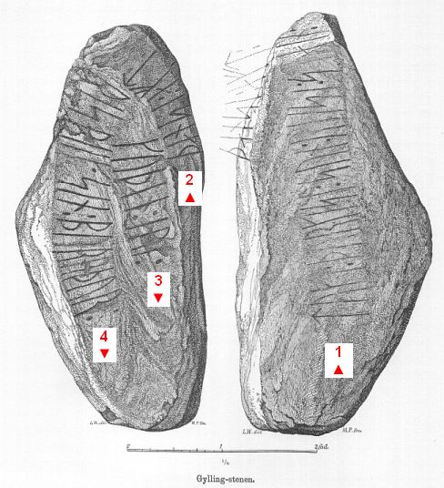
Prof. Jens Jacob Asmussen Worsaae (*14.03.1821 - 15.08.1885, dänischer Archäologe und Vorgeschichtler - link-LIVES - Bestattungsprotokoll)
 Bildquelle: Fotografie
zw. 1863-1900 von Fotograf Budtz Müller
(*26.12.1837 -
30.12.1884) -
Det Kgl. Biblioteks billedsamling - Lizenz:
Public Domain
Bildquelle: Fotografie
zw. 1863-1900 von Fotograf Budtz Müller
(*26.12.1837 -
30.12.1884) -
Det Kgl. Biblioteks billedsamling - Lizenz:
Public Domain
war am 29.07.1850 in Gylling am Fundort um die Inschrift zu lesen (Er las fehlerhaft "uisbik" anstatt "risbiik"), worüber er in seinem Tagebuch "Notesbog IV" aus dem Jahr 1850 auf den S. 10 und 11 diese Aufzeichnungen vornahm. Bei der Gelegenheit sei der Runenstein in das Waffenhaus der Kirche verbracht worden, berichtet H. L. Møller in seinem Aufsatz "Otto Møller: Optegnelser om Gylling" (S. 200 - siehe Literaturhinweise unten).
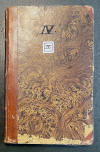 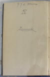 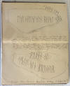


Dessen Tagebücher werden heute in Kopenhagen in dem "Antikvarisk-Topografisk Arkiv" aufbewahrt, worüber ich bei meinem Besuch am 27.09.2022 Einsicht nehmen und diese Fotos anfertigen durfte.
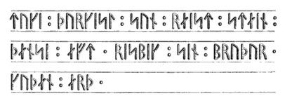
Carl Christian Rafn (*16.01.1795 - 20.10.1864, Altertumsforscher - link LIVES - Bestattungsprotokoll)
 Bildquelle: Zeichner
Magnus Petersen -
Det Kgl. Biblioteks billedsamling - Lizenz:
Public Domain
Bildquelle: Zeichner
Magnus Petersen -
Det Kgl. Biblioteks billedsamling - Lizenz:
Public Domain
die Inschrift im Jahre 1856 - übrigens die erste Veröffentlichung - in seinem Buch "Antiquités de l'Orient, monuments runographiques", S. 206, wiedergegeben. Seine Erkenntnisse beruhen auf einer Zeichnung des Mühlenbauergesellen Mortensen aus Gylling und einer Beschreibung von Pfarrer Hans Larsen Møller (*10.7.1797 - 03.10.1870 - er war Pfarrer in Gylling von Juni 1841 bis zu seinem Tod 1870 - link-LIVES).
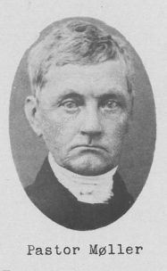
Hans Larsen Møller - Bildquelle: Trøst-Hansens sognekort - Nr. 3064 - Lizenz: Public DomainAls Sekretär der "DET KONGELIGE NORDISKE OLDSKRIFT-SELSKAB" berichtet Rafn in der Jahresversammlung der Gesellschaft am 5. Mai 1856 zu seinen Aktivitäten im Jahr 1855 dazu in kurzen Worten: "Sognepræsten til Gylling, Aarhuus Amt, Hads Herred, H. L. Møller, meddeelte Beskrivelse over en der i Kirkens Vaabenhuus bevaret Runesteen tilligemed en omhyggelig jevnført Copie af Indskriften, tagen af Møllebyggersvend Mortensen." Nachzulesen auf den S. 115/116 der Antiquarisk Tidsskrift 1855-57.
Übersetzung: "Der Pfarrer von Gylling, Amt Aarhus, Hads Harde, H. L. Møller, lieferte eine Beschreibung eines Runensteins, der im Waffenhaus der Kirche aufbewahrt wird, zusammen mit einer sorgfältig ausgeführten Kopie der Inschrift, angefertigt von Mühlenbauergesellen Mortensen."
Von Rasmus Henrik Kruse (*07.08.1796 - 30.05.1877, Landschaftsmaler - link-LIVES - Heirat 21.12.1851)
 Bildquelle:
Det Kgl. Biblioteks billedsamling - Lizenz:
Public Domain
Bildquelle:
Det Kgl. Biblioteks billedsamling - Lizenz:
Public Domain
der zahlreiche Runensteine gezeichnet hat, haben sich im "Antikvarisk-Topografisk Arkiv" in Kopenhagen in seinen Aufzeichnungen mit dem Titel "Nørre Jyllands Mærkværdigheder i det 19. Aarh. Hs. Bd 1-2 (med) Tillæg 1-2" zwei Zeichnungen von 1857 bewahrt. Die finden sich genaugenommen im Band Tillæg II, Nr. 10 und 11, eingebunden nach der Beschreibung des Runensteins auf den S. 17 und 18. Er schreibt dort u.a., "...dass der Runenstein auf einem nicht näher bezeichneten Feld in der Nähe eines Grabhügels stand. Über den ursprünglichen Standort des Steins ist daher nichts bekannt..."
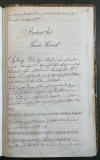 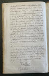 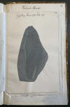 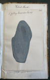


Dieses Werk wird heute im Nationalmuseum in Kopenhagen, Antikvarisk-Topografisk Arkiv, aufbewahrt. Dort durfte ich am Dienstag, 27.09.2022, zu Gast sein, die vier Bände in Händen halten und fotografieren.
George Stephens (*13.12.1813 - 09.08.1895, englischer Archäologe und Philologe)
 Bildquelle:
Minder fra min Virksomhed paa Arkæologiens
Omraade fra 1845 til 1908 von
Magnus Petersen (*04.09.1827 - 01.02.1917) auf der
Seite 265 - Lizenz:
Public Domain
Bildquelle:
Minder fra min Virksomhed paa Arkæologiens
Omraade fra 1845 til 1908 von
Magnus Petersen (*04.09.1827 - 01.02.1917) auf der
Seite 265 - Lizenz:
Public Domain
macht in seinem Werk The old-northern runic Monuments of Scandinavia and England, Vol. 1, 1866-67 auf der S. 350 Ausführungen zu dem Runenstein.
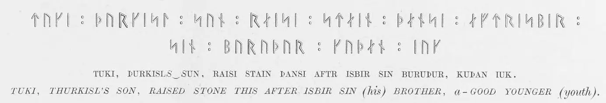
Er gibt die Runeninschrift basierend auf einer Zeichnung "a careful and exact drawing" von Rasmus Henrik Kruse wieder - siehe oben. Er führt auch aus, dass Carl Christian Rafn die Inschrift in seinem o.a. Werk bereits wiedergegeben habe, allerdings mit einem fehlerhaften Text und einer schlechten Übersetzung!
George Stephens stellt in seiner Abhandlung die Vermutung an, dass "Toki" der Runenritzer "Toki der Schmied" sein könnte, der bereits die Runensteine von Grensten und von Hørning geritzt hat. Ludv. F. A. Wimmer macht dazu in seinem Werk - siehe unten - ab der S. 267-270 Ausführungen zur Thematik. Erik Moltke wiederspricht der Vermutung in "Danmarks runeindskrifter", S. 91, ebenfalls mit dem Hinweis auf "fehlende paläografische Grundlagen" und verweist außerdem auf die ausführlichen Ausführungen von Ludv. F. A. Wimmer.
Prof. Julius Magnus Petersen (*04.09.1827 - 31.01.1917, Archäologischer Zeichner und Restaurator - link-LIVES - Bestattungsprotokoll)
Bildquelle: Fotografie
von 1903 von Fotograf Marius Christensen
(*24.06.1874 -
25.06.1907) -
Det Kgl. Biblioteks billedsamling - Lizenz:
Public Domain
zeichnete diesen Runenstein für das Runenwerk von Prof. P. G. Thorsen (*07.08.1811 - 06.05.1883, Bibliothekar, Runenforscher und Historiker - link-LIVES - Artikel: Levnedsbeskrivelser af de ved Københavns Universitets Firehundredaarsfest promoverede Doktorer, Illustreret Tidende 1882, Nr. 1235 - vom 27.05.1833 / Grabstein in Varde / Eheschließung in Varde am 19. August 1848)
 Bildquelle: Fotografie
zw. 1863-1900 von
Fotograf Budtz Müller (*26.12.1837 -
30.12.1884) -
Det Kgl. Biblioteks billedsamling - Lizenz:
Public Domain
Bildquelle: Fotografie
zw. 1863-1900 von
Fotograf Budtz Müller (*26.12.1837 -
30.12.1884) -
Det Kgl. Biblioteks billedsamling - Lizenz:
Public Domain
im Jahr 1870 - De danske runemindesmærker beskrevne og forklarede, anden Afdeling, Jyllands Runemindesmærker, I. Afbildninger, 1879 - Nr. 38 - Google Scan.
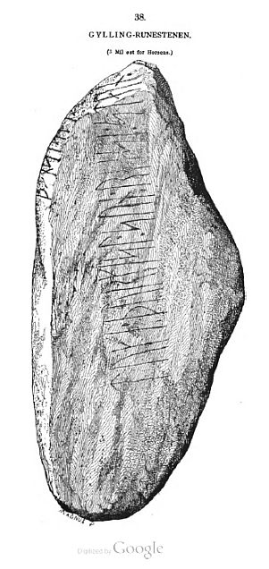 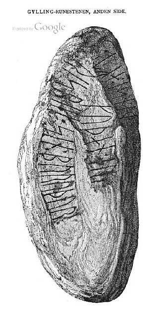
In seinem 1880 erschienenen Textband "Band II, Text" macht er auf den S. 115-116 Ausführungen zu dem Runenstein.
P. G. Thorsens Nachlass (Bezeichnet als: P. G. Thorsens optegnelser, tegninger m.m. vedrørende runer og runemindesmærker - überführt aus der Kopenhagener Universitätsbibliothek 1929 - Gemäß Ministerialschreiben vom 04.03.1929; früher benannt als Additamenta 612 kvart - findet sich in der Königlichen Bibliothek unter NKS 3296 (in mehreren einzelnen Pappschachteln). In der Pappschachtel Nr. 17 werden diese beiden Zeichnungen, die er jeweils auf den 30.08.1870 datiert hat, verwahrt, die ich bei meinem Besuch in der Königlichen Bibliothek am 27.09.2022 fotografieren durfte.


In dieser Schachtel wird außerdem ein weiterer, 4-seitiger Brief von Kaplan Jacob Michael Budtz aus Gylling (*20.08.1805 - 04.05.1871 - link-LIVES - siehe oben), datiert auf den 25. Januar 1842, verwahrt, in dem er ihm die Fundumstände schildert und die von ihm erkannten Runen zeichnerisch wiedergibt. Er schreibt dort auch: "Niemand wusste, woher der Stein stammte, aber der Gemeindevorsteher und Landwirt Sören Sörensen erinnerte sich, dass er in seiner Jugend, vor etwa 50 Jahren, beim Wiederaufbau der Scheune, vor seines Vaters Scheunentor aufgestellt worden war."
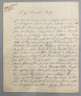 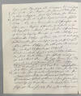 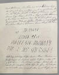 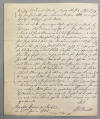


Prof. Ludv. F. A. Wimmer (*07.02.1839 - 29.04.1920, Philologe und Runenforscher - link-LIVES - Politiets registerblade - Bestattungsprotokoll)
 Bildquelle:
Fotografie zw. 1877-1900 von Fotograf Hansen & Weller
-
Det Kgl. Biblioteks billedsamling - Lizenz:
Public Domain
Bildquelle:
Fotografie zw. 1877-1900 von Fotograf Hansen & Weller
-
Det Kgl. Biblioteks billedsamling - Lizenz:
Public Domain
berichtet zu dem Runenstein in seinem Werk "De danske runemindesmærker undersøgte og tolkede af Ludv. F. A. Wimmer, Andet Bind, Runestenene i Jylland og på øerne. 1899-1901" ab der S. 254ff. unter der Nr. 55. Die Zeichnung stammt ebenfalls von Magnus Petersen, wurde aber von Ludv. F. A. Wimmer, der den Runenstein am 31.07.1878 vor Ort untersuchte, überarbeitet.
Ludv. F. A. Wimmer hat in seinem weiteren Band 4.2 - 1903-1908 - auf der S. LXXXVII - bezogen auf seine Forschungen in dem o.g. Band II, S. 257 - diesen ergänzenden Nachtrag aufgenommen:
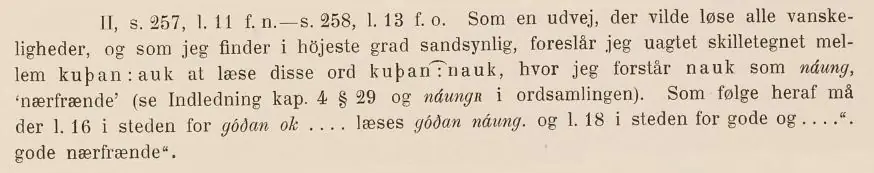
Er schlägt darüber eine Lesung vor, die alle Deutungsschwierigkeiten lösen würde und die er für sehr wahrscheinlich halte. Er trägt deshalb vor, ungeachtet des Satzzeichens zwischen kuþan : auk, diese Wörter als kuþan ͡ : nauk zu lesen, wobei er nauk als jungen, nahen Verwandten verstehe. Folglich: guter naher Verwandter.
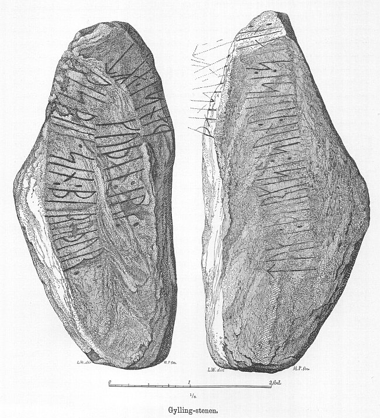
Er hat seine jahrelangen Aufzeichnungen der "Kgl. Bibliotek" in Kopenhagen überlassen. Ein Verzeichnis darüber wurde 1915 in Buchform herausgegeben - "Collectio runologica Wimmeriana: Fortegnelse over Ludv. F. A. Wimmers runologiske o. a. Samlinger i Det kgl. Bibliotek"
In seinen Unterlagen in der Königlichen Bibliothek befinden sich unter "III - Originaltegninger af de danske Runemindesmærker, udførte paa Undersøgelsesrejserne af Magn. Petersen og kontrollerede paa Stedet af Ludv. Wimmer, samt Prøvetryk af de paa Grundlag af de nævnte Tegninger, Aftryk o. s. v. til De danske Runemindesmærker" udførte Afbildninger med Wimmers Rettelser"


zu dem Runenstein von Gylling unter der Nr. 66 diese beiden Zeichnungen vom 31.07.1878, die ich bei meinem Besuch in der Königlichen Bibliothek am 27.09.2022 fotografieren durfte.


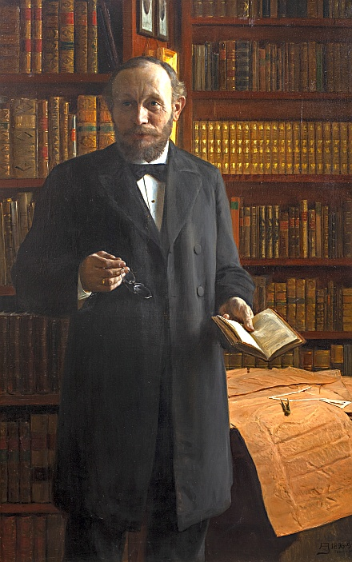
Ludv. F. A. Wimmer - Öl auf Leinwand - 1897. Das Bild hängt in der Bibliothek des Instituts für Nordische Studien und Linguistik der Universität Kopenhagen. Fundort / Lizenz: CC-BY-SA 4.0
Bei dem Künstler, der dieses tolle Portrait gemalt hat, handelt es sich um August Jerndorff (*25.01.1846 in Oldenburg - 28.07.1906 in Kopenhagen - link-LIVES - Bestattungsprotokoll Kopenhagen)
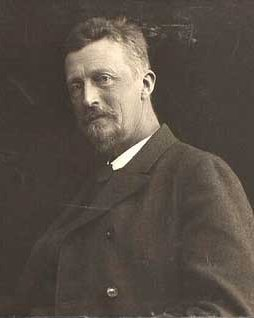
Bildquelle: Wikipedia - Lizenz: Public DomainDie hier gezeigten Aufnahmen stammen von Erik Moltke (*04.04.1901 - 19.10.1984, Runologe, Historiker - link-LIVES)
 Bildquelle: Scan von Buchumschlag "Runerne i Danmark og ders
oprindelse" - Erik Moltke - 1976 - Lizenz:
CC-BY-SA
Bildquelle: Scan von Buchumschlag "Runerne i Danmark og ders
oprindelse" - Erik Moltke - 1976 - Lizenz:
CC-BY-SA
der den Runenstein mit Lis Jacobsen (*29.01.1882 - 18.06.1961, dänische Runologin und Archäologin -link-LIVES - Taufe - Melderegister - Hochzeit)
 Bildquelle:
Wikipedia - Lizenz:
Public Domain
Bildquelle:
Wikipedia - Lizenz:
Public Domain
am 24.10.1928 und am 10.06.1929 fotografierte.
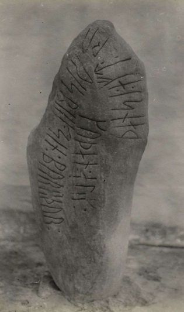
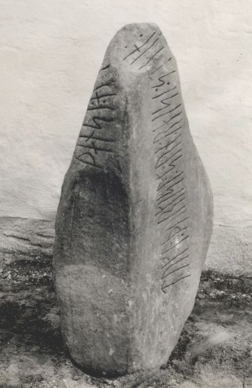
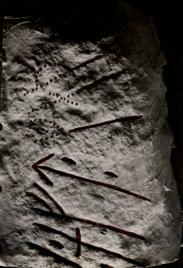
Quelle: Digitale Sammlung des Nationalmuseums in Kopenhagen - Bild 1 - Bild 2 - Detailaufnahme - jeweils Lizenz: CC-BY-SA
Im Vorfeld zu dem 2016 erschienenen Buch von Lisbeth M. Imer (*1973, Runologin am Nationalmuseum Kopenhagen) "Danmarks Runesten - en fortælling" reiste sie mit dem Fotografen Roberto Fortuna zur Bestandsaufnahme durch die Lande. Dieser hat die Runensteine mit Schräglicht aufgenommen und darüber wirklich herausragende Fotos erzielt. Diese Fotografien stammen vom 06.03.2012.
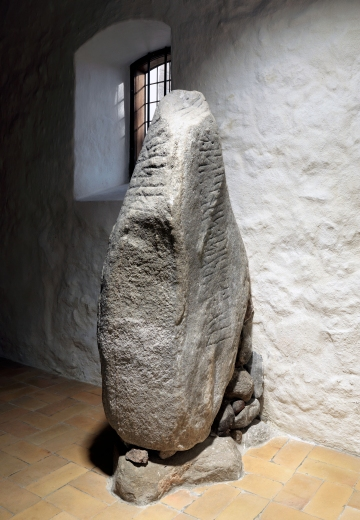
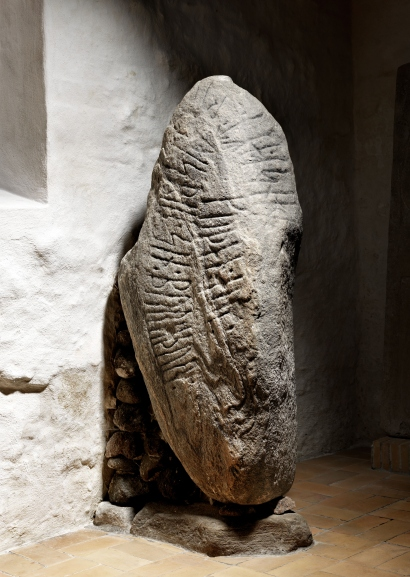
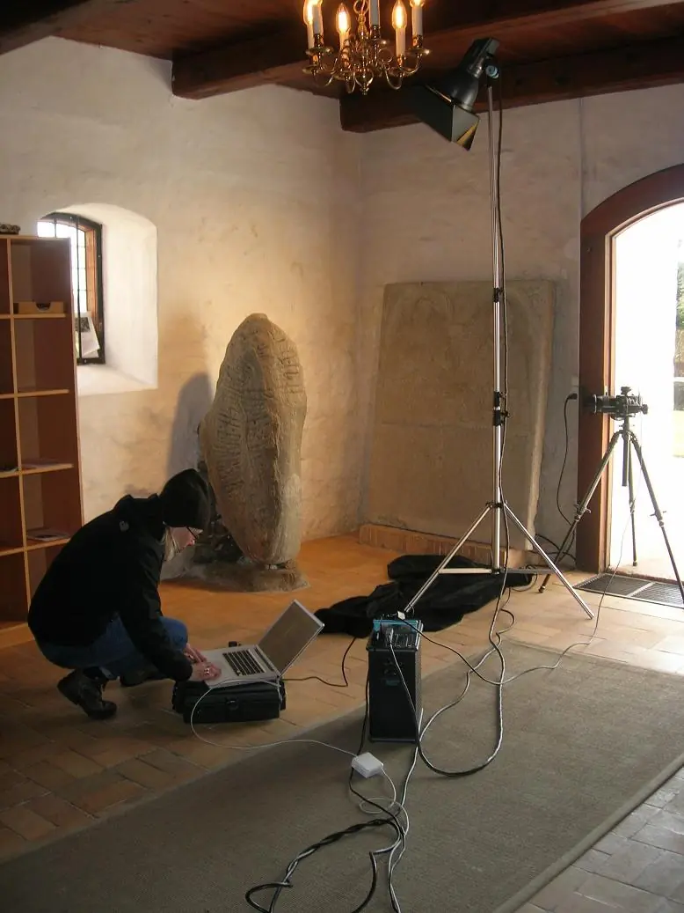
Quelle: Digitale Sammlung des Nationalmuseums in Kopenhagen - Bild 1 / Bild 2 - Lizenz: CC-BY-SA
Das rechte Foto zeigt Lisbeth M. Imer bei ihrer Arbeit in der Kirche von Gylling und gibt auch mal den Aufwand wieder, der betrieben werden muss / das Equipment das benötigt wird, um solch aussagekräftige Fotos von Runensteinen und deren oft schwer erkennbaren Runeninschriften zu machen - Internetfund im Zusammenhang mit dem damaligen Blog - leider nicht mehr abrufbar - https://natmus.dk/presse-og-nyheder/nyhedsarkiv/2012/runesten-skal-fotograferes/.
Die Informationen zu diesem Runenstein aus der dänischen Runendatenbank finden sich hier.
Der entsprechende Eintrag in "Fund og Fortidsminder" ist hier verlinkt. Darin ist inzwischen dieser Zustandsbericht des Steinrestaurators Leif Vognsen aus dem Jahr 2018 eingebettet.
Über diesen Link finden sich zu dem Runenstein Informationen des Forschungsprojektes "Runes" der Akademie der Wissenschaften zu Göttingen.
Auf den Webseiten des Dänischen Nationalmuseum - Danmarks Kirker - kann man eine in dänischer Sprache gehaltene 29-seitige, bebilderte Abhandlung als pdf-Datei zur Baugeschichte/Innenausstattung der Kirche von Gylling aus den Jahren 1983-87 abrufen.
Ein dänischsprachiger Film von TV2 Østjylland über die Gylling Kirche findet sich hier.
Literaturhinweise:
Ludv. F. A. Wimmer - De danske Runemindesmærker - Haandudgave ved Lis Jacobsen - 1914 - S. 85 Nr. 56
Otto Møller - Optegnelser om Gylling - Bearbejdede og udgivne af H. L. Møller - Samlinger til jysk Historie og Topografi. Bind 4, RækkeV, 1925-27. - Darin ab der S. 199ff. Infos zum Runenstein.
Bang, J. P. - Gyllingpræsten OTTO MØLLER : Liv og Forfatterskab - 1931 - 235 Seiten
Erik Moltke - Nytolkning af Gylling-stenen - Aarhus Aarbog, 1930, S. 161-173
Erik Moltke - Runerne in Danmark og deres oprindelse - 1976 - S. 284 und 414
Erik Moltke - Runes and Their Origin, Denmark and Elsewhere - 1981 - S. 345 und 525
Niels Åge Nielsen - Danske Runeindskrifter - København - 1983 - S.117-118
An der Zufahrt zum Pfarrhof wurde dem legendären Pfarrer von Gylling Lars Otto Møller (*20.02.1831 - 13.01.1915 am 27. Oktober 1925 dieser Gedenkstein errichtet.
Bildquelle: Google Streetview / Titelbild zur Lebensbeschreibung Gyllingpræsten OTTO MØLLER : Liv og Forfatterskab von 1931